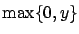
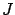
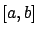
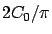

According to a legend about the foundation of Carthage (around 850 B.C.), Dido purchased from a local king the land along the North African coastline that could be enclosed by the hide of an ox. She sliced the hide into very thin strips, tied them together, and was able to enclose a sizable area which became the city of Carthage.
Let us formulate this as an optimization problem. Assume that the coast is a
straight line (represented by the  -axis in Figure 2.1). The hide strips tied together
correspond to a curve of a fixed length.
The problem is to maximize the area under this curve.
-axis in Figure 2.1). The hide strips tied together
correspond to a curve of a fixed length.
The problem is to maximize the area under this curve.
More formally, admissible curves are graphs of continuous functions2.1
 satisfying the endpoint constraints
satisfying the endpoint constraints
 .
The area under such a curve is
.
The area under such a curve is

which is the quantity to be maximized. Of course, it is easy to convert this to a minimization problem by working with . Keeping in mind the original problem context, we should actually restrict to be nonnegative (so it does not go into the ocean) or at least replace by

in the definition of
; but even without these modifications, it is clear that only nonnegative can be optimal. Assuming that the curve is differentiable (at least almost everywhere), we can write the length constraint asAt this point the reader can probably guess what the optimal curve should be. It is an arc of a circle. This solution was known to Zenodorus (2nd century B.C.), although its rigorous derivation requires tools from calculus of variations which will be presented in this chapter.
Note that since we are representing admissible curves by graphs of functions , we are excluding circular arcs that are longer than a semicircle. In the context of Dido's problem, we can think of the interval

as not actually being specified in advance but instead as being chosen based on the length constraint. Then, once we know that the optimal curve must be a circular arc, it is straightforward to check that the optimal choice of the interval is the one in which the circular arc of length
).